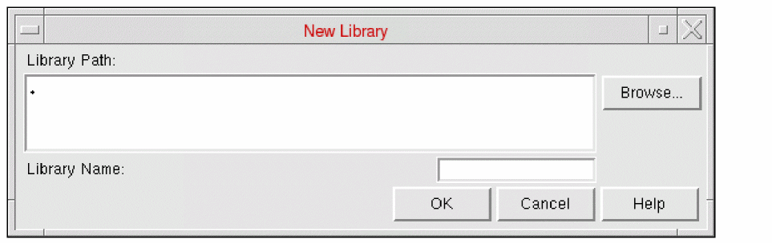

Creating a Library in Abstract Generator
If you use File – Library – New command to create a new library, Abstract Generator automatically attaches the Cadence default technology file shipped with the software, cdsDefTechLib, to the library. The default technology file is unlikely to contain enough information to satisfy the internal technology checker of Abstract Generator, so you must always replace or supplement the technology information before you begin abstract generation.
There are two ways of doing this using the Abstract Generator GUI:
- Select File – Library – Attach Technology to attach an existing technology file to be used with your new library. During abstract generation, the tool might need to update your technology information; for example, the tool might update the technology file with information about sites and layer-purpose pairs. You must ensure that an attached technology file has permissions that allow it to be updated by Abstract Generator, otherwise you will need to add the missing information manually.
- Use File – Import – LEF to import a LEF technology file. Abstract Generator automatically converts the information in the LEF file into appropriate technology information for OpenAccess.
The New Library form allows you to create a new library in the specified directory. You can create a library at any time during the abstract generation process.
-
Choose File – Library – New. It displays the New Library window.
 -
In Library Path, specify a valid directory path to where the new library should be created. The default value is the current directory, that is, “
.”. -
Click Browse to display the Browse New Library Directory form that can be used to locate the required directory location for the new library.
If no path is specified, a warning message is displayed requesting that you enter a valid directory path. -
In Library Name, specify a valid library name. The library name must not contain any spaces. You also cannot specify the name of an existing library that is already specified in the
cds.libfile of the current directory. - Click OK.
A new library will be created at the location specified (a new library directory will be created if one does not already exist, with the same library directory name as the name of the library). The library is added to the cds.lib file and a copy of cdsDefTechLib is added to the library. The default cdsDefTechLib technology library is copied into the new library to allow the import of technology LEF to create a technology file. When you are importing LEF in Abstract Generator, you can chose to select the Overwrite option which lets you copy over the current technology.
Related Topics
Importing LEF in Abstract Generator
Return to top